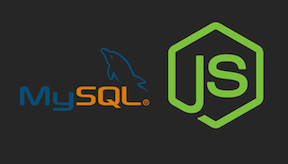

Getting Ready!
You will need to do two things before you can start with MySQL in Node.JS: make sure MySQL is installed and install npm module.
To connect to MySQL in Java, MySQL implements the Java Database Connection (JDBC) API with a driver. The JDBC API defines how a client may apply CRUD operations; oriented toward relational databases.